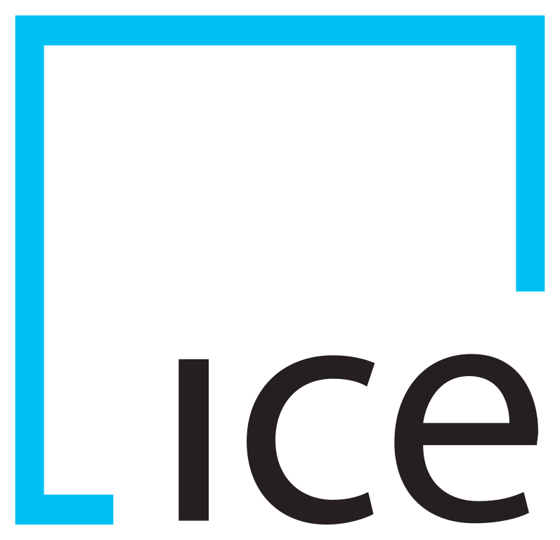
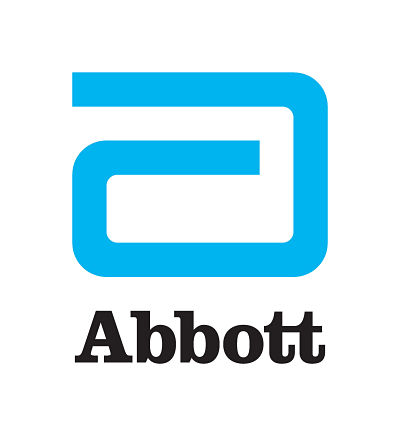

Solid experience in communication, sales and negotiation. Diploma in Economy. Experience in Reporting, Pricing, Data Management and automation of processes. Worked for Multinational and Financial firms. Unique strengths: logical and analytical thinking, quality oriented, proactive and positive attitude.
Aiming to get involved in more technical roles, specifically in the area of Web Development.
I have basic experience in HTML, CSS, Javascript, React, IntelliJ, Visual Studio Code, Git and WordPress and basic knowledge of UX and SASS.
Open to positions in Switzerland or remote.
Experience
07/2018 – 03/2020
Role: Business Analyst – ETF Management Team
Company: BlackRock, Budapest (Hungary)
Responsibilities:
- Owner of the AUM (assets under management) reporting process for the APAC ETF Management and COO.
- Owner of the GPL (Global Product List) monthly report for Sales, Product and Management Team of APAC Region to show the latest updates and detailed information of current ETFs available in iShares.
- Deliver the reports with the highest quality possible paying strong attention to the details.
- Coordinate with the team members and other teams in order to complete the process accurately and deliver the results within strict deadlines.
- Many process improvements and automation with Excel, Macros and VBA in order to save time in the processes and minimizing the possibilities of errors.
- Doing a refresh or even a complete restructuring of manuals to have a clearer and straighter forward guideline of the processes.
- Caring about company culture: applying to volunteering opportunities and company events. Founder of the Latin Community Group within Budapest Office to connect Spanish speakers and help with the integration in the Hungarian culture.
Back
01/2017 – 06/2018
Role: Commercial Manager – Pricing Specialist
Company: Vodafone Shared Services Budapest
Responsibilities:
- Analyze profitability and check company’s rules in the offers before present it to the client (Companies in Mid/Low segment established in Spain).
- Decide if the offer can be approved or if it has to be refused.
- Be in relation with Sales Managers to decide/negotiate which changes has to be made in order to not loose the opportunity and at the same time achieve profitability and follow Vodafone rules.
- Create daily reports via Excel and using company database.
- Contact with other departments (Pre-Sales, Marketing, Contract Management, Product Department, Supply Department, Finance, Credit Control, IT) to solve issues.
Back

08/2016 – 09/2016
Role: Data Analyst
Company: ICE, Dublin (Ireland)
Responsibilities:
- Edit company’s data that is related to securities (Fixed term, Zero Coupon and Floating as notes and bonds) using the Company’s database.
- Collect bonds and notes information from Stock Exchanges and update the Company’s data.
- Manage large Excel sheets: edit data, use the filter options and some functions.
Back

02/2015 – 08/2016
Role: Customer Service Administrator
Company: Abbott Medical Optics, Dublin (Ireland)
Responsibilities:
- Complete multiple administrative tasks according to customer/market requirement: data store and online data store, create and manage large Excel worksheets in a daily basis (using functions, formulas, pivot tables and Macros) divide the team tasks like orders, invoicing and queries.
- Tasks in SAP: Invoicing to doctors, hospitals and insurance companies, create daily reports, credits, edit customers data and the status of products (sold, scrap and in consignment), manage the inventory of consignment orders for Spain.
- Contact with customers (hospitals and doctors), insurance companies and local market to solve queries related to orders, invoices or control of inventory (outbound and inbound calls).
- Liaise with key departments such as Sales, Warehouse, Accounts Receivable, Database Administration and Field Service to coordinate daily activities.
Back
11/2011 – 07/2014
Role: Sales Representative
Company: Nu Skin, Budapest (Hungary)
Responsibilities:
- Customer service via phone and email for Spanish customers and distributors.
- Support customers' online purchase and manage entire sales cycles.
- Suggest buying products and giving information about new promotions during inbound calls and also doing outbound calls.
- Photographer: Taking photographs for the company (of new employees and events).
- Order management (single orders, automatic deliery orders, group orders), payments, credit memo, debit memo, refunds and replacements by SAP.
- Manage specific type of orders and products sales (being the unique responsible of those sectors).
- Liaise with key departments such as Warehouse, Accounts Receivable and with Account Managers.
- Deal with senior customers.
Back
Education
Online learning: 2020 – 2021
- O’Reilly: JavaScript for Beginners: Learn with 6 Main Projects
- LinkedIn: JavaScript Essential Training, Become a Front-End Web Developer, React.js Essential Training, UX Foundations
Currently learning SASS and WordPress
CFA Institute: 2019-2020
- Investment Foundations®
La Salle BCN: 2016 – 2016
- Introduction to SAP BI: Foundations of SAP BI, ETL processes, Data Warehouse and SAP Lumira
Budapest Business School – College of Tourism and Catering: 2006 – 2010
- Economics in Tourism and Hospitality, specialized in Catering and Hotel Management
Normal No.9 – Buenos Aires: 1999 – 2005
- High School
Technical Knowledge
- HTML, CSS, Javascript, Git
- Basic TYPO3, WordPress, UX, SASS and React
- Notepad++
- Basic SQL and Tableau
- MS Office: PowerPoint, Excel, Word, Outlook and basics of Access
- Open Office
- SAP SD
- Ipop Mail, KANA
- Basic Photoshop
Communication Skills
- Logical thinking
- Very good analytical skills
- Proactive and positive attitude
- Strong verbal and written communication skills
- Excellent organizational and problem solving skills
- Ability to work in a team
- Customer-oriented
- Independent
Language Skills
- Spanish: Native
- Hungarian: Native
- English: Fluent
- German: Basic
Contact
- Mobile phones: 0036 70 5036096 (HU)
- 0041 78 6293010 (CH)
- E-mail: ethel.maria.benko@gmail.com
- Work permit: EU, Switzerland, Mercosur